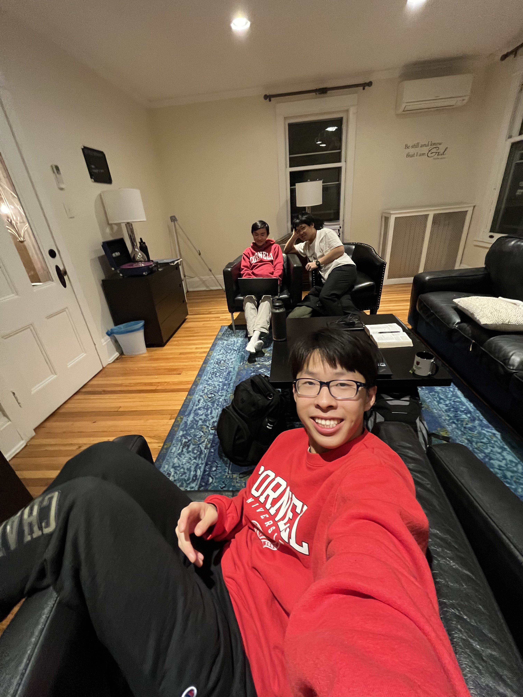
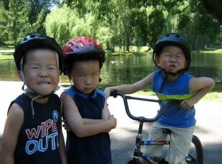
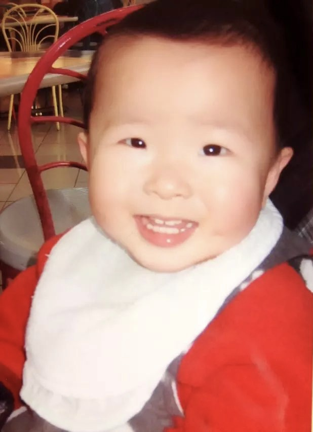
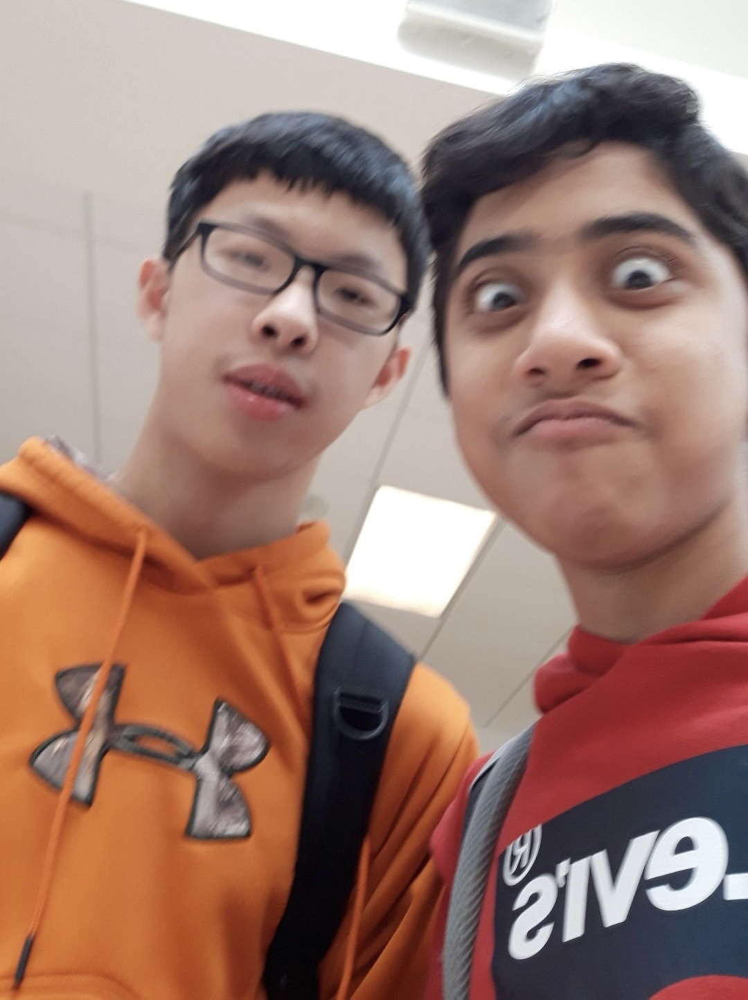
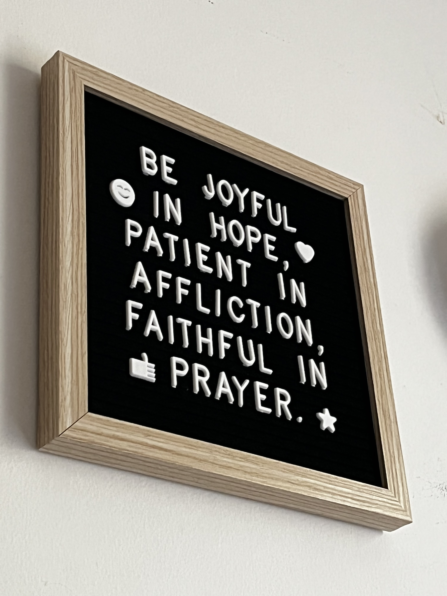
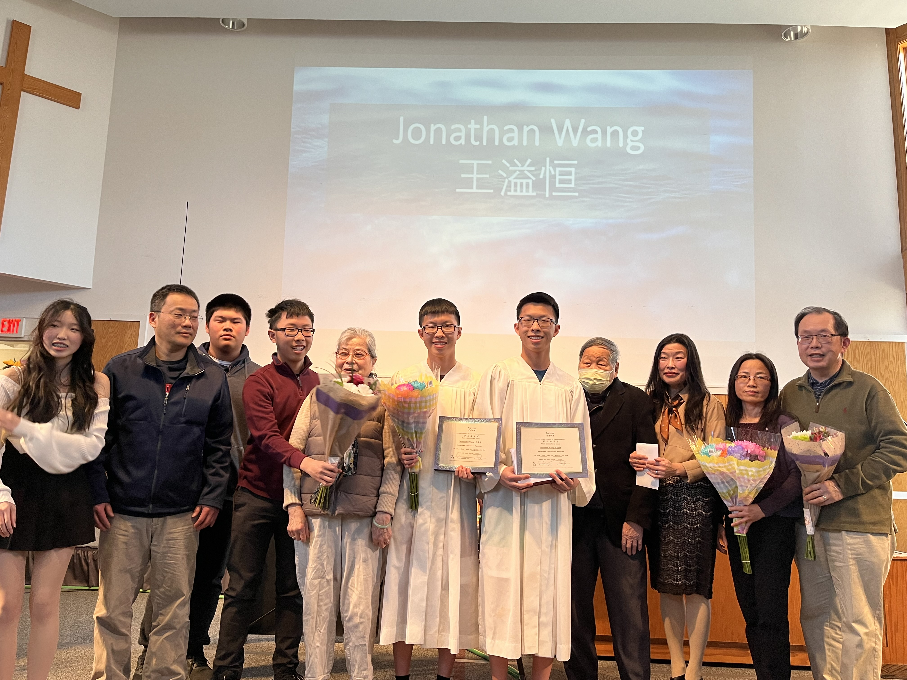
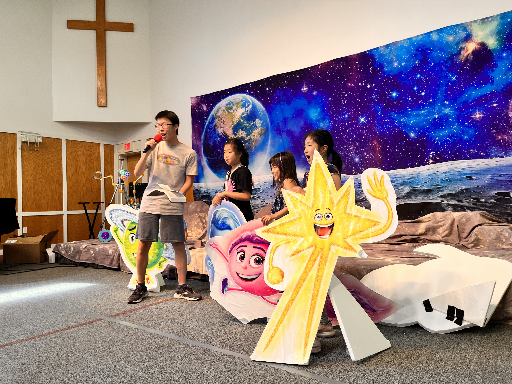
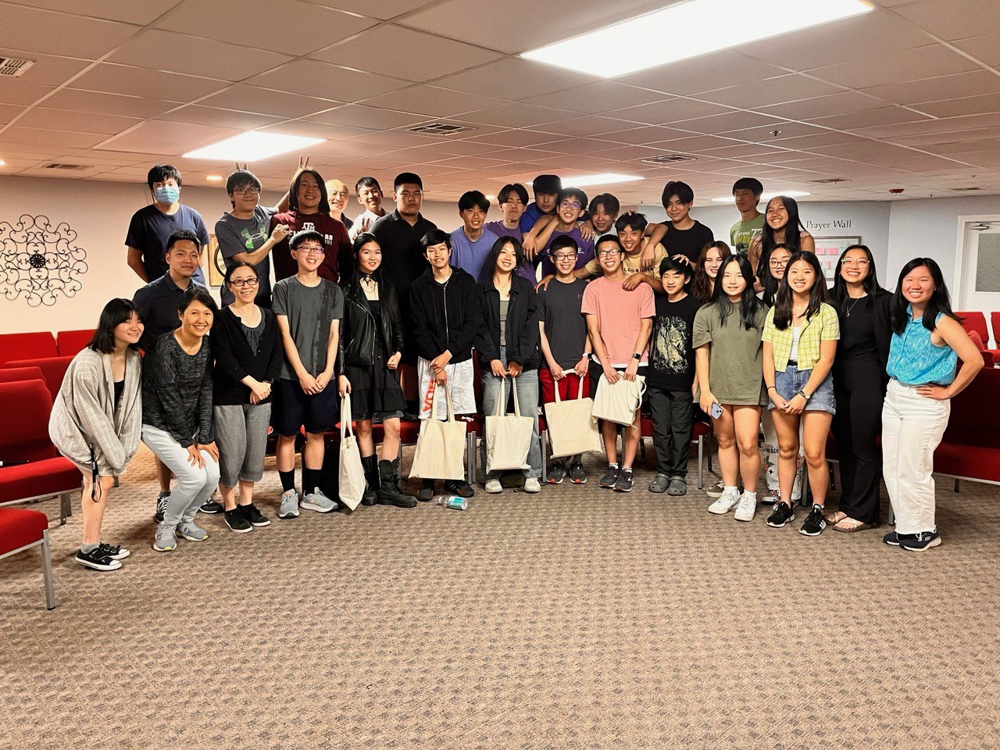

Hello!
My name is Jonathan Wang and I am currently a freshman in college. I attend Cornell University and I am majoring in Computer Science in the College of Arts and Sciences. I am interested in Artificial Intelligence, Machine Learning, Robotics, and Web Design/Development. I also have an interest in Environmental Sustainability, leaving me with a desire to utilize computer science as a means to help the world.
Me and my D3 during my freshman year of college!
I am 18 years old and my birthday is on July 16, 2005. I have a twin, Christopher, and an older brother, Alex. Christopher attends the University of Massachusetts Amherst and studies Biomedical Engineering. Alex attends Cornell University and studies Computer Science. We can be a hectic bunch sometimes... :/
We were quite the unique trio.
Outside of academics, I have picked up a couple of hobbies. They include running, playing video games, exploring new cuisines, working out, fashion, dancing, and listening to music. I enjoy playing Valorant with friends, eating foods from different cultures with my family, and listening to Christian pop or Lofi. I also used to run a lot. I was part of my high school's cross country and track team. Now, with sore legs and cramped feet, I workout to stay fit. My dream is to travel the world, to glance up at the Northern Lights or look around in the middle of the Colosseum. I hope I can experience and explore the glory and beauty of God's creation.
Growing Up
I grew up an hour away from Boston. I've started saying this ever since I've went off to college because no one knows the town I really grew up in. I grew up in a small town called Northborough. It is bordered by several other -borough towns: Southborough, Westborough, and Marlborough. Ironically, Southborough is east of Northborough and Westborough is south of Northborough.
My Baby Photo!
My childhood memories have blurred as I've gotten older, but there are some distinct ones that I can still recall. From the time I was born, my grandparents on my dad's side have lived with us. We would always celebrate holidays and birthdays with them, sometimes with my cousins as well. From preschool to middle school, whenever school was over, my brothers and I would rush to the living room and watch TV. Curious George was always a hit. My parents put us through Kumon to get us to learn ahead in both mathematics and reading. Being the mischevious kid I was, I did anything to get out of doing the homework I was assigned. However, now I realize the true impact Kumon had on my future. My parents had a rule: we could only play videogames once we finished our Kumon and school homework. One IPad turned into three as we each wanted to play Minecraft. Minecraft was THE game of my childhood. But in all, I am so grateful for my parents, who invested in my childhood, teaching me how to walk, bike, put me through piano lessons, and supported me every step of the way. My childhood was like any other childhood, but I would never trade it away for another.
Me and my friend, Rohit, freshman year of high school.
If you've never met me in person or did not know me prior to college, you may not know that I was shy. Like Super Shy. I never liked to talk and I hated being the center of attention. My social skills were 0/100. In fact, I won the Quietest Superlative in High School. That was how quiet I was. In Middle School, I only talked to close friends and whenever I had to. Nothing more. I remember being in my Algebra 1 class and one of my close friends, Mihir, challenged me to speak up. He asked our teacher, Mrs. Jameson, whether she thought I needed to talk more. We joked around way too much in that class. At the time, I felt frustrated and scared. But looking back, I can credit a lot of my growth and improvement in my speaking to him. He was the first to challenge me and make me want to speak out more. In high school, I improved little by little, but I really only talked when I needed to. I didn't participate in class discussions much and I stuck to close friends. In my sophomore year of high school, I took public speaking as an elective class. Oh did I suck at public speaking, but the class really helped me get out of my comfort zone each day and speak up. Even today, I use some of what I learned in that class in my interactions with other people. Now that I'm in college, I've decided to get further out of my comfort zone. For me, I think of college as a chance to push myself and seek new adventures. Being shy was a limitation I did not want in the way. However, am I a changed person? No. I am still me. :)
Faith Journey
I grew up in church. That's how I usually start my testimony to those curious enough to want to know. However, I have come to think of this phrase as a safety net to fall back on. A justification for my faith. But I do not want it to be like that. I want to be telling my story in a way to praise God. So let's take a different approach, shall we?
One of my favorite verses, Romans 12:12.
Palms sweating and my mind racing, I hear my name being called. Jonathan Wang, Wang YiHeng. I stand up and make my way up to the stage, everso glancing at the piece of paper in my hands. This piece of paper was my testimony. My proclomation of my faith journey. As I reached the stage center, where the lecturn stood, I placed the piece of paper down, glanced at the crowd before me, and took a deep breath.
My brother and I during our baptism in 2023.
I'm kidding! My testimony will always start with "I grew up in church." Not because it is a justification of my faith nor a safety net to fall back on, but rather, it is where my faith journey started.
I was an MC for my church's VBS program in 2023.
I grew up in church. My parents, particularly my dad, brought me and my brothers to church every Sunday morning. Whether it was super warm outside or raining like there was no tomorrow, my dad always pushed us to get up and go. As I've grown up now and listened to the testimonies of my peers, I've realized there is a common theme: you never really take it seriously. I felt this... a lot. I would complain and make excuses the mornings when my dad would barge into the room me and my brothers shared and yell: "TIME FOR CHURCH!" at the top of his lungs. We would always ask for a couple of minutes and he would tell Alexa to create a timer. Yipee! Back to sleep we would go. I think being so relying on my parents pushing me to go to church made me take my faith much less seriously than I should have. Growing up, from preschool all the way to early high school, I volunteered at and attended multiple programs my church held, including Vacation Bible School, AWANA, etc. I would also go on retreats, such as Winter Teen Conference and Workcamp. I would get the occasional spiritual high, often fading away a week later. I had an unhealthy relationship with the Lord and I prioritized myself over following the Lord. I was naive and living for the desires of the flesh. I suffered from lust, idolation in the form of video games and grades, and my actions were not faithful. At this time, I thought I was doing everything right. I went to church, prayed before I went to bed, and read the bible occasionally. Now, was I following through with my actions in faith? No, I was not. I lived nearly 17 years of my life in this way until 2022, when church came back in-person after COVID.
Senior night during a Friday night fellowship.
2022 was the year that changed my life. From 2021-2022, Sunday service was a combination of hybrid or remote. I didn't see a lot of the poeple that used to go and, frankly, I never had close friends at church. It was a time where I strayed away from my faith farther than I ever had. I felt it. I thought I could do everything alone, on my own strength. Now, I know that I am nothing without God.
"I am the vine, you are the branches. He who abides in Me, and I in him, bears much fruit; for without Me you can do nothing." John 15:4-5.
A dark time in my life indeed. However, after summer ended, church slowly opened back up again in person and I started attending each week. We had hired a new pastor for the youth and he made a big impact on my faith journey. I think the community that was slowly formed week by week made me reflect on my own faith. I remember Friday nights, where we would pick apart bible passages and make observations and questions. All of this made me think about my faith and whether or not I was really a Christian. Was I living faithfully? Was I living for God and not for myself? These questions pushed me to really start living for the Lord and not for my own flesh and desires. Over time, I felt the community of the church and the impact it had on me was tremendous. People were encouraging, caring, and loving.I loved being in a community of believers. Fast forward to 2023. Around February or March, I was approached by my pastor's wife and asked about my faith journey. I further reflected and I remember her suggesting baptism. She told me that baptism was a public proclomation of faith. She asked me if I was ready to make that commitment. Within a couple of weeks, I approached my pastor after a Sunday service and said: "I want to be baptised." Perfect enough, the next baptism was on Easter Sunday, the day of Jesus's ressurection. In that moment and onwards, my heart was full of God's love. He showed me love through the community around me and gave me the push to live for Him instead of for the world. As I continue on into college, I've sought to live faithfully and continue to grow and mature in my faith and relationship with the Lord.
"Do not be anxious about anything, but in every situation, by prayer and petition, with thanksgiving, present your requests to God. And the peace of God, which transcends all understanding, will guard your hearts and your minds in Christ Jesus." Philippians 4:6-7 (NIV).